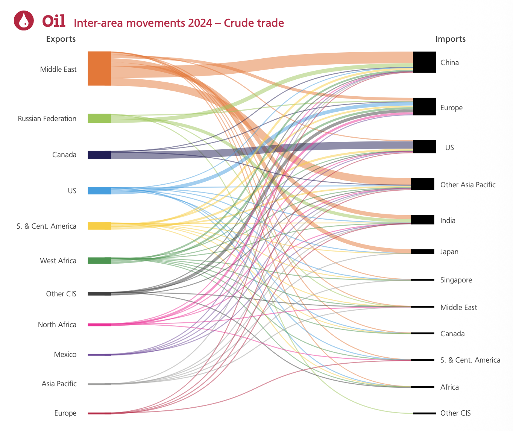

Em 28 de fevereiro de 2026, após ataques coordenados dos Estados Unidos e Israel contra instalações nucleares iranianas, a Guarda Revolucionária do Irã anunciou o fechamento do Estreito de Ormuz por razões de segurança. Em questão de horas, o preço do barril de Brent subiu 10% na abertura dos mercados asiáticos. Em dias, o JPMorgan reportou que o fluxo de petróleo pela rota havia caído 75%. A AIE anunciou a maior liberação de reservas estratégicas de emergência de sua história: 400 milhões de barris. Depois de semanas de tensão e negociações mediadas pelo Paquistão, um cessar-fogo condicional foi anunciado em abril de 2026 — e o estreito voltou a operar.
Mas o episódio deixou uma lição permanente: a economia global construiu toda a sua infraestrutura energética sobre a premissa de que Ormuz estaria sempre aberto. Essa premissa, ao menos temporariamente, deixou de ser verdade. Para entender por que, é preciso primeiro entender os fluxos — e os dois diagramas do Energy Institute Statistical Review 2024 são o melhor ponto de partida.
Parte 1 — Os dois diagramas: como ler o fluxo global de petróleo
O Energy Institute Statistical Review of World Energy — a publicação de dados energéticos mais citada do mundo, herdeira de 70 anos de relatórios da BP — produz anualmente dois diagramas Sankey que mostram como o petróleo se move entre regiões do planeta. Um para o petróleo bruto (crude), outro para os derivados (refined products). Juntos, eles revelam a anatomia completa do comércio global de hidrocarbonetos.
Em um diagrama Sankey, a espessura de cada fluxo é proporcional ao volume. Uma faixa grossa representa muito petróleo; uma fina, pouco. A cor identifica a região exportadora. Lendo da esquerda para a direita: quem exporta → para onde vai.

A espessura de cada faixa é proporcional ao volume transportado. Oriente Médio (laranja) domina amplamente as exportações, com o grosso indo para a China. O fluxo laranja grosso para a direita é o coração do problema de Ormuz.
O que o Diagrama 1 (petróleo bruto) revela
O primeiro diagrama conta a história do petróleo bruto — o óleo que sai dos campos e vai para as refinarias. Três padrões saltam aos olhos:
1. O Oriente Médio domina as exportações — e quase tudo vai para a Ásia. A faixa laranja do Oriente Médio é de longe a mais espessa do lado esquerdo. E o destino principal é inequívoco: China (maior barra preta à direita), seguida de Índia, Japão e Other Asia Pacific. Este é o fluxo que passa pelo Estreito de Ormuz. A linha laranja grossa que vai da esquerda para a China à direita é literalmente Ormuz visível no diagrama.
2. O Canadá é um exportador enorme — mas quase tudo vai para os EUA. A barra azul escura do Canadá é espessa, mas o fluxo cinza que vai direto para os EUA é dominante. É um fluxo intracontinental via oleodutos — imune a qualquer tensão marítima. Isso explica por que os EUA importam muito petróleo mas têm dependência mínima de Ormuz.
3. América do Sul (S. & Cent. America) exporta principalmente para a Ásia e EUA. A faixa amarela representa principalmente Brasil, Colômbia e Venezuela. O Brasil está aqui — exportando petróleo cru do pré-sal para a China (44% das exportações brasileiras) e EUA (14%). Nenhum desses fluxos passa por Ormuz.

O Oriente Médio lidera também em exportação de derivados, mas o mapa é muito mais fragmentado. EUA, Rússia, Índia e Singapura são exportadores relevantes. A África e América do Sul (S. & Cent. America) aparecem agora como importadores significativos — países que têm petróleo bruto mas falta de refino.
O que o Diagrama 2 (derivados) revela — e por que é diferente
O segundo diagrama mostra um mundo muito mais complexo. Os derivados — diesel, gasolina, querosene de aviação (QAV), GLP, nafta — circulam por rotas diferentes do petróleo bruto. Algumas observações cruciais:
A Índia emergiu como grande exportador de derivados. A barra azul da Índia no lado esquerdo é expressiva — a Índia importa petróleo bruto (principalmente do Oriente Médio), refina em suas modernas refinarias e exporta diesel e gasolina para a Europa e África. É um modelo de valor agregado no refino que o Brasil ainda não conseguiu replicar.
Singapura é um hub global de derivados. A barra verde de Singapura exporta para toda a Ásia-Pacífico — é um entreposto refinador que processa petróleo do Oriente Médio e distribui derivados para países vizinhos sem refinarias suficientes.
A América do Sul (S. & Cent. America) aparece como importadora. Aqui está o paradoxo brasileiro: exportamos petróleo bruto (visível no Diagrama 1 como exportador amarelo) e importamos derivados (visíveis no Diagrama 2 como importador). O Brasil está nos dois lados dessa equação — e pagamos o diferencial de valor agregado para fora.
A Rússia exporta derivados para a Europa — um fluxo que se remodelou completamente após 2022. Com as sanções da guerra na Ucrânia, os derivados russos que iam para a Europa foram redirecionados para a Índia, China e Turquia, enquanto a Europa passou a importar mais do Oriente Médio e EUA. O mapa de 2024 já reflete essa reorganização.
Parte 2 — O Estreito de Ormuz: a física de um chokepoint
📍 ESTREITO DE ORMUZ — DADOS FÍSICOS E ESTRATÉGICOS
Um chokepoint é um ponto de estrangulamento geográfico — uma passagem tão estreita que quem a controla tem poder desproporcional sobre o que flui por ela. O mundo tem vários: o Canal de Suez, o Estreito de Malaca, o Canal do Panamá, o Estreito de Bab-el-Mandeb. Mas nenhum concentra tanto valor energético quanto Ormuz.
A física do problema é simples: os superpetroleiros VLCC (Very Large Crude Carriers) que transportam 2 milhões de barris cada precisam de calado profundo e espaço para manobra. Os dois corredores de 3 km são o mínimo operacional — e ficam inteiramente dentro do alcance de mísseis anti-navio do território iraniano, que domina a margem norte do estreito por cerca de 700 km de litoral.
Parte 3 — A vulnerabilidade assimétrica: quem sofre e quanto
O bloqueio de Ormuz não afeta todos os países da mesma forma. A vulnerabilidade depende de três fatores: (1) quanto do seu petróleo vem do Golfo Pérsico via Ormuz; (2) qual o tamanho das reservas estratégicas disponíveis; (3) se existem rotas alternativas ou fornecedores substitutos acessíveis.
| País/Região | % petróleo via Ormuz | Reservas estratégicas | Vulnerabilidade |
|---|---|---|---|
| Japão | ~70% das importações | ~250 dias (IEA) | 🔴 Crítica |
| Coreia do Sul | ~65% das importações | ~90 dias | 🔴 Crítica |
| Índia | 55% das importações (~2,1 Mi bpd) | 20–25 dias (!) | 🔴 Crítica |
| China | ~50% das importações (~5,5 Mi bpd) | ~90 dias + oleodutos Rússia/Ásia Central | 🟠 Alta |
| Europa | ~20–25% do petróleo importado | 90 dias (obrigação IEA) | 🟠 Moderada |
| EUA | ~2% do consumo | SPR (~700 Mi barris) | 🟢 Baixa direta |
| Brasil | 0% (petróleo próprio / América) | Limitadas | 🟢 Indireta (preço) |
Parte 4 — As rotas alternativas e seus limites
Existem três infraestruturas que permitem contornar o Estreito de Ormuz — mas nenhuma tem capacidade para substituir o que passa pelo canal:
1. Oleoduto Leste-Oeste da Arábia Saudita (Petróleo): liga campos próximos ao Golfo ao porto de Yanbu, no Mar Vermelho. Capacidade nominal de até 5 Mi bpd — o maior bypass disponível. Mas já opera como rota alternativa parcial mesmo em tempos normais, para evitar custos de seguro em Ormuz. Em crise, seria imediatamente saturado.
2. Oleoduto Abu Dhabi Crude Oil Pipeline (ADCOP) — Habshan-Fujairah (EAU): conecta campos dos Emirados ao terminal de Fujairah no Golfo de Omã, evitando Ormuz. Capacidade: 1,8 Mi bpd. Já opera como rota preferencial dos EAU em momentos de tensão.
3. Oleoduto Goreh-Jask do Irã: projeto iraniano para exportar petróleo direto para o Golfo de Omã sem passar pelo estreito. Capacidade projetada de 1 Mi bpd, capacidade efetiva atual: ~300 mil bpd. Ironicamente, o principal interessado em ter um bypass de Ormuz é o próprio Irã — cujas exportações também dependem do estreito.
Somando tudo: no máximo 2,6–5,5 Mi bpd de capacidade alternativa confirmada contra 20 Mi bpd de fluxo normal. O deficit é estrutural e não tem solução de curto prazo.
Parte 5 — O preço do petróleo e o efeito cascata global
O mercado de petróleo reage não apenas ao que acontece, mas ao que pode acontecer. A simples aprovação no Parlamento iraniano de uma resolução autorizando o bloqueio — ainda sem execução real — fez o Brent saltar ~10% em uma semana em junho de 2025. Quando o bloqueio efetivo começou em março de 2026, o barril ultrapassou US$ 100 em dias.
Os mecanismos de transmissão são rápidos e múltiplos: superpetroleiros ancoram aguardando segurança → fretes marítimos disparam → prêmios de seguro sobem → refinarias reduzem processamento → estoques de derivados caem → preços de gasolina, diesel e querosene sobem em todo o mundo. Tudo isso num prazo de dias a semanas, muito antes de qualquer escassez física ser sentida nos postos de combustível.
Parte 6 — O paradoxo iraniano: a arma que fere quem a usa
O bloqueio de Ormuz é chamado por analistas de "arma suicida" — e com razão. O Irã produz cerca de 4 Mi bpd de petróleo, das quais ~1,65 Mi bpd são exportados. A China é o destino de 90% dessas exportações. Se Ormuz fecha, as exportações iranianas também param — o país corta a própria fonte de divisas.
Além disso, o Irã importa gasolina e derivados refinados. Mesmo sendo grande produtor de petróleo bruto, seu parque de refino é insuficiente para a demanda interna — um espelho invertido do Brasil. Um bloqueio prolongado cria escassez interna no próprio país que o impôs.
Talvez mais importante: a China é quem realmente controla se o bloqueio é sustentável. Com 50% das suas importações em risco e sendo o maior parceiro comercial do Irã, Pequim tem enorme leverage para pressionar Teerã a reabrir a rota. O secretário Rubio pediu publicamente à China que interviesse — um reconhecimento implícito de que a influência chinesa sobre o Irã supera a dos EUA nesse contexto.
Parte 7 — O Brasil e Ormuz: distante no mapa, próximo no preço
O Brasil está bem posicionado geograficamente. Nenhum petróleo brasileiro passa pelo Estreito de Ormuz — nem o que produzimos, nem o que importamos (que vem principalmente da Arábia Saudita por rota direta pelo Atlântico, sem passar pelo Golfo). A Petrobras confirmou que possui "rotas alternativas à região do conflito" e que o abastecimento não seria afetado abruptamente.
Mas isso não nos isola do impacto econômico. O mecanismo é simples e inexorável: o preço do petróleo é global. Quando o Brent sobe de US$ 72 para US$ 100, o diesel importado pelo Brasil fica mais caro — e o Brasil importa ~20% do diesel que consome. Isso eleva os fretes, a inflação de alimentos e o custo de toda a cadeia produtiva.
O que os diagramas de fluxo nos ensinam sobre o mundo
- O Oriente Médio ainda domina o petróleo bruto global. Por mais que o pré-sal brasileiro, o xisto americano e as renováveis cresçam, o fluxo laranja espesso do diagrama de petróleo bruto mostra que o Golfo Pérsico continua sendo o coração do sistema energético fóssil mundial — com tudo que isso implica em vulnerabilidade geopolítica.
- A Ásia é a grande vulnerável — não o Ocidente. 84% do petróleo de Ormuz vai para China, Índia, Japão e Coreia do Sul. Uma crise de Ormuz é, acima de tudo, uma crise asiática. Os EUA são hoje quase imunes diretamente — o que muda completamente a dinâmica das negociações.
- Derivados e bruto têm geografias diferentes. O diagrama de derivados revela que Índia e Singapura emergiram como exportadores de produtos refinados — enquanto Brasil e África importam os mesmos derivados que poderiam produzir com seus próprios petróleos, se tivessem refinarias suficientes.
- Não há alternativa a Ormuz em escala. Os oleodutos alternativos cobrem no máximo 13–27% do fluxo normal. A premissa de que "sempre haverá um bypass" é falsa. A economia global foi construída sobre a conveniência de Ormuz, não sobre a resiliência energética.
- O bloqueio de 2026 não é o último. Mesmo com o cessar-fogo de abril de 2026, o prêmio de risco geopolítico permanecerá elevado por anos. O Irã demonstrou que um Estado com capacidade militar limitada pode, controlando 30 km de água, impor custos econômicos a todo o planeta. Essa lição não se apaga com um acordo temporário.
- A transição energética é também uma questão de segurança. Cada carro elétrico carregado com solar, cada hidrogênio verde produzido localmente, cada MWh que substitui diesel importado é um passo para fora da dependência de Ormuz. A transição energética não é apenas sobre clima — é sobre soberania.
ENERGY INSTITUTE. Statistical Review of World Energy 2025 — 74ª edição. Londres: Energy Institute, 2025.
Figuras: Oil — Inter-area movements 2024: Crude trade e Oil — Inter-area movements 2024: Refined product.
Disponível em: energyinst.org/statistical-review · Acesso em: 09 abr. 2026.
- Energy Institute — Statistical Review of World Energy — fonte original dos diagramas
- EIA — World Oil Transit Chokepoints — análise detalhada dos chokepoints globais
- OPEB — Rotas Energéticas e o Estreito de Ormuz (mar/2026)
- AIE — Agência Internacional de Energia — reservas estratégicas e análises de crise
- Gás Natural no Brasil e no Mundo — 20% do GNL global também passa por Ormuz
- Curva do Pato e Segurança Energética — o conceito de segurança energética aplicado ao Brasil
- Biocombustíveis: Brasil vs Mundo — como o etanol de cana reduz exposição a crises de petróleo
- LCOE — Custo Nivelado da Eletricidade — por que renováveis são também uma aposta de segurança energética
- Frota de Carros Elétricos no Mundo — eletrificação como resposta estrutural à dependência de petróleo
- Energy Institute (2025). Statistical Review of World Energy 2025 — 74ª edição. Diagramas de fluxo inter-regional de petróleo bruto e derivados 2024. energyinst.org/statistical-review
- EIA — U.S. Energy Information Administration (2025). "World Oil Transit Chokepoints." Dados de fluxo por Ormuz: ~20 Mi bpd. 84% destino Ásia. EUA: 0,5 Mi bpd via Ormuz (2% do consumo). eia.gov
- OPEB — Observatório de Política Externa (mar/2026). "Rotas energéticas e disputas geopolíticas: o Estreito de Ormuz." Dados de capacidade das rotas alternativas (2,6 Mi bpd), vulnerabilidade da Índia (20–25 dias de reserva). opeb.org
- Fast Company Brasil (mar/2026). "Guerra no Irã deve afetar rota de petróleo: conheça o Estreito de Ormuz." Arábia Saudita: 38% (5,5 Mi bpd) do volume de Ormuz. fastcompanybrasil.com
- The Conversation (mar/2026). "Fechamento do Estreito de Ormuz é grave para a Ásia, mas afeta o mundo todo." Irã converteu Ormuz em "zona de interdição". Capacidade AIE: 3,5–5,5 Mi bpd de rotas alternativas. theconversation.com
- BM&C News (abr/2026). "Cessar-fogo entre Irã e EUA alivia mercado de energia e reabre estreito de Ormuz." theconversation.com
- Poder360 (mar/2026). "Entenda o impacto do fechamento do estreito de Ormuz." Japão: ~70% de importações via Ormuz. Índia: 2,1 Mi bpd via Ormuz. poder360.com.br
- Exame (jun/2025). "Rota de 30% do petróleo, Estreito de Ormuz nunca foi fechado." Lloyd's List: até 33 Mi boe/dia pelo estreito. exame.com